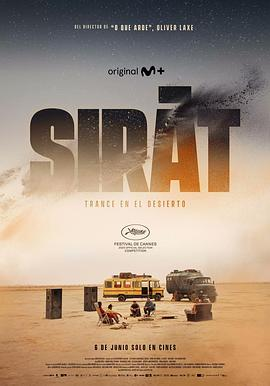

7.2
接近终点
Sirât
2025
法国
评分 7.2
导演:
奥利维尔·拉克谢
演员:
塞尔希·洛佩斯 / 布鲁诺·努涅斯 / 斯蒂芬妮娅·嘉达 / 约书亚·利亚姆·亨德森 / 理查德·贝拉米 / 托宁·詹维耶 / 杰德·欧基德
类型:
剧情
剧情简介
炽热的摩洛哥沙漠，一条通往无尽远方的道路。一位名叫路易斯（塞尔希·洛佩斯饰）的父亲和他年幼的儿子埃斯特班，驾驶着一辆陈旧的越野车，在风沙中寻找几个月前失踪的大女儿玛丽娜。她曾在沙漠中的一次电子派对上神秘消失——那里音乐与幻觉交织，理智与欲望模糊成一体。影片以公路旅程为线索，将现实与幻觉编织成一场精神漂流。路易斯的旅途不仅是寻找，更是赎罪。他逐渐卷入一支由游牧派对爱好者组成的临时车队，他们追逐着一个又一个“秘密派对”，在狂热节奏与荒凉地貌中，试图逃离空虚的现实。埃斯特班在这场旅途中早熟而沉默，孩子的目光成为观众唯一清醒的视角。导演奥利维尔·拉克谢以诗意的影像与极简对白，呈现了人类在极限环境下的情感崩塌与灵魂觉醒。镜头长时间停留在沙丘起伏的地平线上，风声与电子乐的节奏相互缠绕，构筑出一种超现实的孤寂。夜幕下的霓虹灯、篝火旁的舞者、破碎的镜头反射出人心深处的幻灭。《接近终点》并非传统意义上的公路片，而是一场关于“失去与重生”的旅程。影片将父子关系与存在主义主题交织，路易斯在追寻女儿的过程中，逐渐理解了放手与接受的意义。结尾处，车灯照亮沙丘的瞬间，观众仿佛看到一条模糊的界线——生与死、幻觉与现实、痛苦与救赎，都在那一刻交汇。这部电影以其独特的气质成为戛纳电影节的亮点之一，被评论誉为“一首关于孤独与爱的沙漠挽歌”。